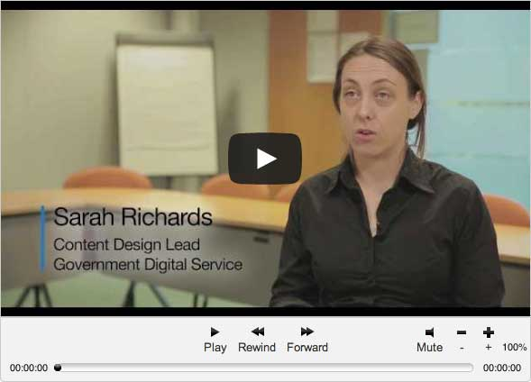

GOV.UK
GOV.UK
-
7.Phases
-
7.1
Discovery
A short phase in which you start researching the needs of your service's users
What are the needs of your users? What services currently meet those? How are they performing? What technological or policy related constraints might there be?
Before you start building a service you need to build up a picture of what the context for that service is. That means lots of user research, close analysis of policies, laws and business needs, and workshops and interviews which establish the criteria for success of your service.
Objectives

The discovery phase will give you a high-level understanding of user needs, what the existing service landscape looks like and a sense of what your initial prototypes will explore.
You’ll need to think about user needs for digital and assisted digital users. As a start, you’ll need to understand what proportion of your users you think will need assisted digital support.
The high-level business context will become clear, and you’ll begin setting targets for your KPIs.
You’ll also get a better understanding of the legacy interfaces and infrastructure you must deal with, and what existing process are in place for replacing or decommissioning these.
This information is found through:
- workshops
- simple mock ups
- paper prototypes
- plenty of whiteboard diagrams
The team
A small team will be required, consisting of your stakeholders and any core team members that have been identified, including the service manager.
Timescales
The phase should not take longer than 4 to 8 weeks. During the final week you should be setting up the broad scope of a project and an initial set of user stories (also known as a backlog) to work to. This is known as an ‘inception’. At the end of the phase a decision should be made whether to proceed to the alpha phase.
Outputs
You will leave the discovery phase with:
- a prioritised list of user needs
- a prioritised list of story cards to feed into project teams
- understanding of team and capability required to complete the project
- ability to scope and plan an alpha
- a decision to progress to next phase
- maybe some rough prototypes
- maybe some user personas
- a list of stakeholders and input from them about existing services
- understanding of existing services, including those run by non-government sources
- understanding of how many of your users will need assisted digital support, and what their user needs are
-
7.2
Alpha
A short phase in which you prototype solutions for your users needs.
When designing a service it’s impossible to predict everything upfront. Each project features many challenges, and in your alpha you will start exploring solutions for these.
You may need to bring more developers and designers into the team, who will help you to build and test prototypes and possible solutions for your users needs.
By the end of the alpha you should have a clear idea of what’s required to build a beta. The whole phase should not last longer than about 6 to 8 weeks.
The objective of an alpha
The objective is to build a working prototype. This will be used by stakeholders or a closed group of end users to:
- gain greater understanding of a service
- test design approach
- test some technologies
- begin to form the team
- gain shared understanding of the service at a coding and integrations level
- understand what or who you will need to deliver a beta
Continue to build upon and analyse the research you have commissioned on user needs and use this to set up an open, engagement process with your stakeholders. Involve a wide range of stakeholders from the private, voluntary and other parts of the public sector. Run a series of workshops with these stakeholders to develop your options.
Following demonstration of your alpha, you may choose to discard the code and start fresh in the beta. If, however, your code is effective you may continue to iterate against your prototype.
Develop options for the assisted digital support for your service. To help develop the options, continue to build upon and analyse the research you have commissioned on user needs. Bring in the expertise of organisations working with people who are offline and users themselves. Run workshops to develop your options.
What should be in your alpha
The alpha doesn’t need to be a complete, end-to-end transaction. You’re looking to demonstrate just enough so users gain some understanding of the service.
Think of it as a proof of concept:
- is the solution appropriate?
- is your approach viable
- do you have enough understanding of your users’ needs to meet them?
If not, find out more and make a new prototype.
Alpha phase duration
The alpha phase is another relatively short phase. At GDS, we try to limit these to about 2 months, running in week-long sprints over a 6 to 8 week period.
Team requirements
This phase involves a relatively small core team, who will be capable of rapidly iterating solutions. It will probably expand and contract in size as different specialisms are required.
This core team will be a mix of stakeholders, and makers (designers and developers) particularly those familiar with user research. It will be led by the service manager.
Outputs
The outputs for the alpha phase are:
- high level story cards
- plan for beta and running of the live service (decreasingly detailed)
- working basic system that provides limited functionality that can be shown to a number of users
- understanding around legacy systems to replace or wrap or integrate with
- cross-functional requirements
- decision to progress to beta phase
- final analysis on the research you have commissioned on user needs
- options for the assisted digital support for your service
-
7.3
Beta
Releasing a version to test in public
You've tested your solutions to user needs and built up a clear picture of what it will take to build and operate your service. Now you will build an end-to-end prototype, test it in public and prepare to run it.

The objective of a beta
The objective of this phase is to build a fully working prototype which you test publicly with users. You’ll continuously improve on the prototype until it’s ready to go live, replacing or integrating with any existing services.
This is achieved by providing the user stories in the backlog created in the alpha phase. This is the time to resolve any outstanding technical or process-related challenges, get the service accredited and plan to go live.
You’ll also be resolving technical and process challenges, meeting for the first time many of the technical criteria outlined in the service standard. You should be rapidly releasing updates and improvements into the development environment, and measuring the impact of your changes to the key performance indicators (KPIs) established in your discovery and alpha phases.
You’ll also test the assisted digital support for the digital service. You might test one or more of the options you developed in the alpha phase.
Duration of the beta phase
The exact duration of your beta will depend on the scope of your project, but an appropriately sized team shouldn’t take more than a few months to create a public beta.
Following the release of your beta you’ll spend some time iterating on the service until it is ready to go live.
Team requirements
You’ll now know what size team you need to create the service, scoping it in response to the findings of your alpha prototype(s). It will be run by a single, suitably skilled service manager, and will include designers, developers, web operations specialists and performance analysts as appropriate.
Outputs
At the end of the beta phase, you’ll have:
- delivered a public, end-to-end prototype of the service
- a collection of prioritised work to be done (your backlog)
- a user testing plan
- accurate metrics and measurements to monitor your KPIs
- tested the assisted digital support for your service
- a working system that can be used, for real, by end users
-
7.4
Live
The work doesn't stop once your service is live
You've been building a service to meet users needs, and after your public beta you have a tested solution that is ready to release.
Going live
To provide a fully resilient service to all end users the service should now meet all security and performance standards. You have configured your analytics to accurately monitor the key performance indicators identified in the building of your service, and you have planned the transition or integration of any existing services.
You have liaised with the team governing the Digital by Default Service Standard to make sure that you have met the requirements of new and redesigned services.
And, most importantly, you have met the user needs identified in the discovery, alpha and beta phases.
Post-launch stages
This is not the end of the process. The service should now be improved continuously, based on user feedback, analytics and further research.
Operational support - both technical and customer-focused - is in place, and you have implemented pro-active monitoring methods. These will help you to:
- monitor system performance
- optimise the code
- ensure the service remains secure
You’ll repeat the whole process (discovery, alpha, beta and live) for smaller pieces of work as the service continues running. Find something that needs improvement, research solutions, iterate, release. That should be a constant rhythm for the operating team, and done rapidly.
Team requirements
You’ll have identified the roles required to run your service, including the service manager and user support teams, while building the service. As different areas of your service are iterated and improved the team size will expand and contract, accommodating specialists as appropriate.
-
7.5
Retirement
Even the best services may eventually reach retirement
Even the best services may eventually reach retirement. Changes in policy may mean that the service is no longer offered or new understanding may mean that those user needs are better provided through a different service.
Whatever the reason, the retirement of digital services should be handled with the same degree of care as their creation, concentrating on user needs.
User needs
Your service will have been built to serve user needs. It’s vital to understand how those needs are to be addressed once your service has been retired, whether they are deemed to no longer exist, are no longer served by government, or will in future be served as part of another service.
If the needs will no longer be met by government but will now be met by the private or voluntary sectors then it’s important to for these organisations to be adequately prepared. This means that the appropriate online user journey can be developed.
Similarly, if the needs are to be served as part of another government service or services then you should identify which services they are and work with those services’ teams. This means the new teams can learn from your experience and you can understand how you’ll support your users to make the transition.
Next stages
Let your users know
The vast majority of users of your service will begin and end their journeys via GOV.UK. As soon as you know that your service is likely to be retired you should contact the GOV.UK team to make sure that those journeys are amended and appropriate information is supplied.
The GOV.UK team will need to know why the service is being retired, and how those user needs are to be served in future so that they can provide the appropriate information, advice and links to users.
For that majority of users who begin and end their journeys on GOV.UK the most important thing is to ensure that GOV.UK is updated. There will be some users, however, who access your service directly whether via links in emails, bookmarks on their computer or remembering your URLs. It’s important to prepare them for the change and lay out clearly what it will mean to them.
Your planning should aim to produce the minimum possible disruption for users, but it will still be a significant change for them. Details of what the change is, why it’s being made, what they will need to do, and what will happen to their data should be made easily available.
Users who access your service via an application programming interface (API) will need time to update their software to use the replacement service’s APIs or to make other relevant adjustments. You should reach out to your API users as early as possible and remember that they may have significant lead times for making and distributing changes. Changes to the service online will also need to be seamlessly tied in with messaging to offline users who are receiving the service through assisted digital channels.
Plan to redirect traffic
Once GOV.UK is updated the vast majority of users will begin to be directed to the new service. Some users will still try to access the service at its current (now retired) home. You should have a plan for redirecting those requests to the appropriate new service, or to provide clear information about the service that has been retired in perpetuity.
When we retired the DirectGov, BusinessLink and departmental websites, we invested a lot of effort in mapping content on those sites to GOV.UK content. We redirected as many of the old sites’ URLs as we could to corresponding GOV.UK URLs, and provided ‘Gone’ pages with links to the National Archive where the content was not being transferred. We wrote about that in “No Link Left Behind”
Make sure your subdomain continues to work
If you operate a
service.gov.uksubdomain, please read your technical responsibilities for ending your service.Data
In running your service you will have accrued a large amount of data about the service and its users. You should already have policies in place to manage that data responsibly, including details of how long it will be retained. Those policies will continue to apply, and you will need to ensure that there is support in place to maintain them.
Where data is being transferred to a new service owner, that should be done in accordance with your existing data protection policies, and communicated clearly to your users.
-
7.1
Discovery
A short phase in which you start researching the needs of your service's users